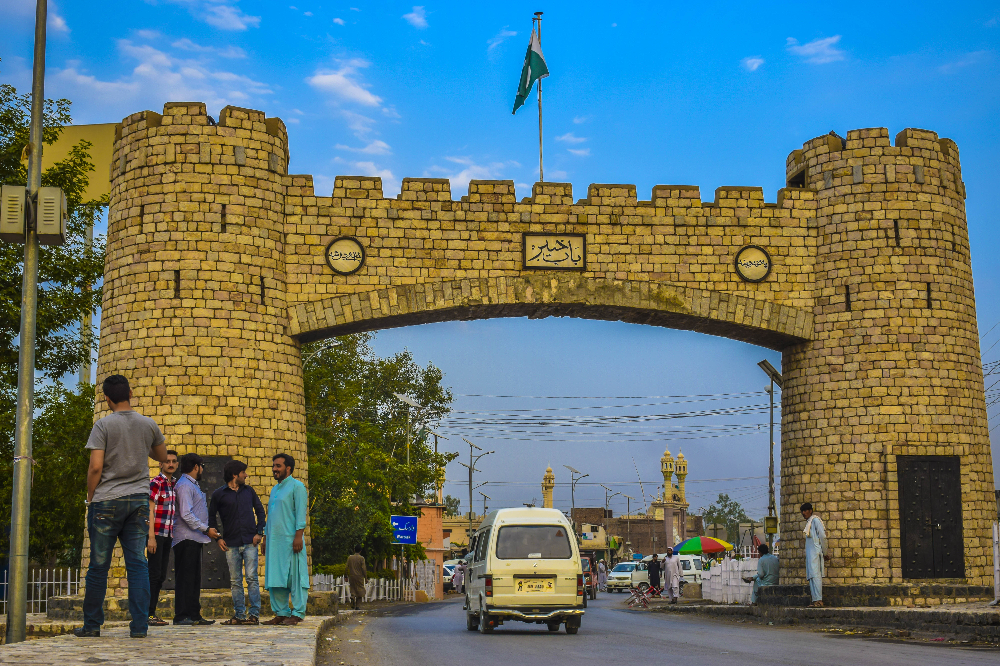
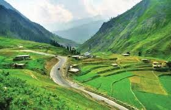
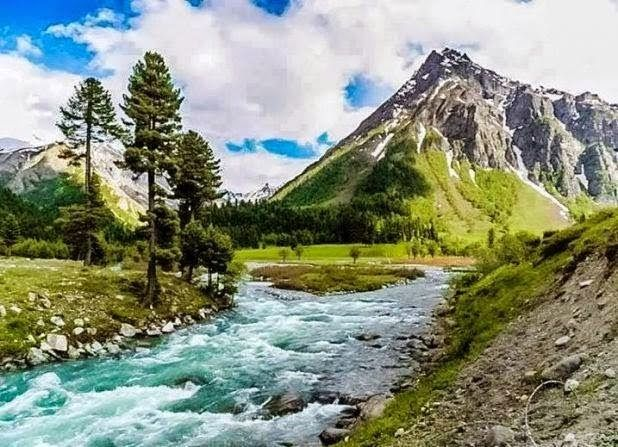
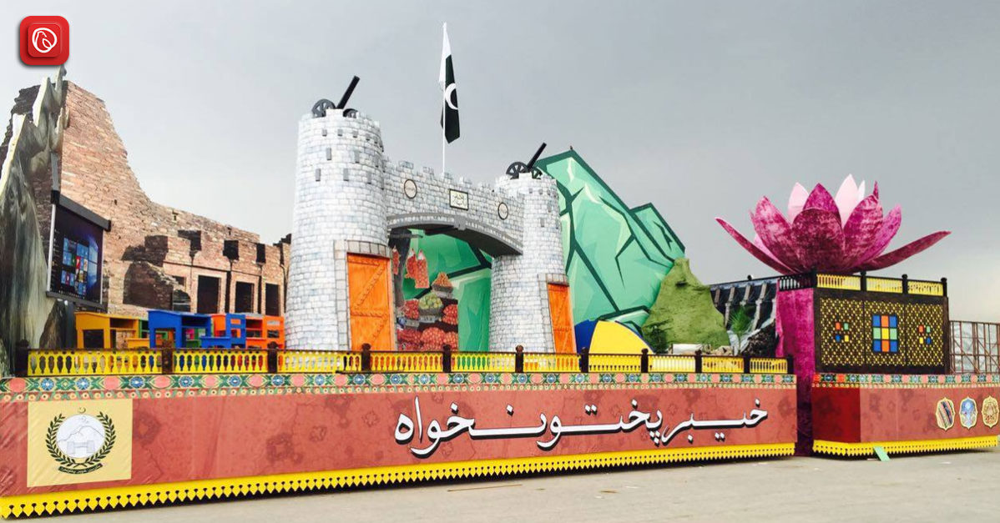
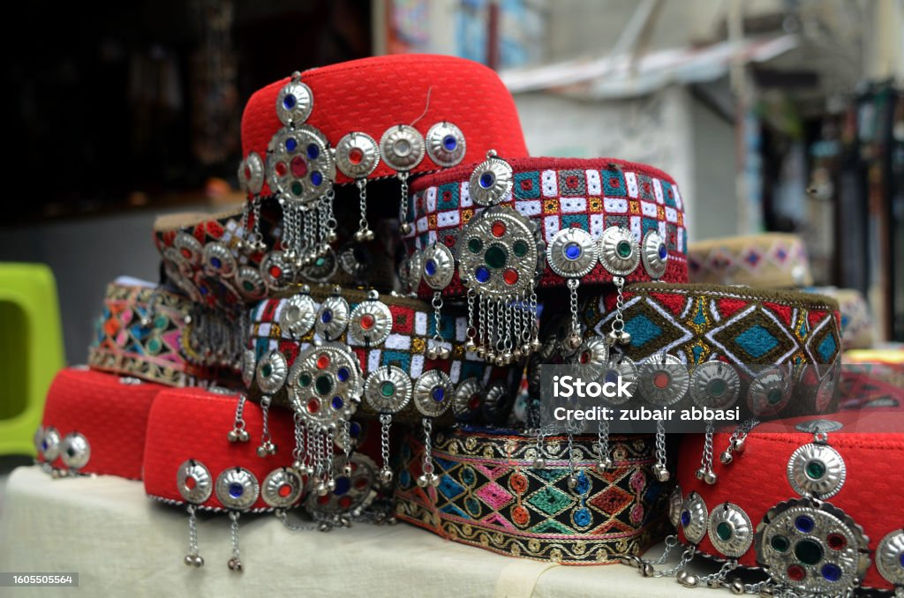

Khyber Pakhtunkhwa (KPK), located in northwestern Pakistan, is a land of breathtaking mountain ranges, including the Hindu Kush and Himalayas, and home to the historic Khyber Pass. Known for its rich Pashtun culture, vibrant traditions, and warm hospitality, the province boasts lush valleys like Swat and Chitral, ancient Buddhist relics in Taxila, and the bustling city of Peshawar. KPK's diverse landscape ranges from snow-capped peaks to fertile plains, while its people preserve unique customs, music, and the Pashto language. A region of both natural beauty and historical significance, it remains a gateway to Central Asia and a testament to Pakistan's heritage.
    